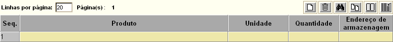

Saída por Doação [ Voltar ]Utilize este formulário para realizar saídas por meio de doação.O formulário "Saída por Doação" encontra-se dentro do menu "Outras Saídas".
Após clicar no nome do formulário, o sistema abrirá a seguinte tela: 1º Passo: informe o nome da entidade para a qual deseja-se fazer a doação. Clique no botão  [Procurar]
para selecionar a entidade a partir de uma listagem de entidades
cadastradas. [Procurar]
para selecionar a entidade a partir de uma listagem de entidades
cadastradas. Se a entidade em questão ainda não estiver cadastrada no sistema, clique no botão para fazer o cadastro. Após inserir os dados da entidade, clique no botão  e em seguida em e em seguida em  para voltar à tela
principal da doação. para voltar à tela
principal da doação.Se necessário, deposite no campo "Observações" informações adicionais sobre a doação. Observação: o campo "N°. da doação" apresenta um sinal de mais "+" por padrão. Desta forma, assim que a doação é salva, é-lhe atribuída o próximo número de doação disponível. 2° Passo: clique no botão . Assim
que a doação é salva, uma grade para inclusão dos produtos da doação
será exibida na parte inferior da tela.
3° Passo: insira os dados referentes aos produtos da doação. Além de selecionar o produto, especifique a quantidade e o endereço de armazenagem do produto. 4° Passo: clique no botão para salvar a doação.5° Passo: se todos os dados estiverem corretos, clique em  para concluir a
doação. para concluir a
doação.6° Passo: se desejar, clique no botão  para visualizar a tela
de impressão do relatório. Em seguida, clique no botão para visualizar a tela
de impressão do relatório. Em seguida, clique no botão  do
navegador para imprimir a nota de doação. do
navegador para imprimir a nota de doação. |